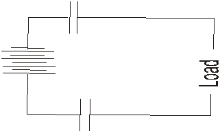

| Date: Mon, 31 Mar 2003
09:37:10 -0800
Dear Luke,
Good insight!
It is possible, if
properly timed and shaped pulsing is used. That is a variant of a very
successful method of quickly and easily recharging batteries that Bedini
has used for over 20 years, and it has worked in some 30 or so overunity
systems he has built. Indeed, you can do it with one battery, since you
can separate (dephase) the ion current between the places from the
electron current from the outside of one plate through the external
circuit to the outside of the other plate. In other words, because the
mass per charge ratio of the lead ions is so much greater (hundreds of
thousands of times greater) than that of the electrons, you can get the
ions moving in "battery charging" mode while at the same time the
electrons are moving in the "load powering" mode, 180 degrees out of
phase. The much higher "pulsed" potential on the plate so pulsed, flows
in both ways, increasing the potential of the ion currents in CHARGING
mode, while at the same time increasing the potential of the electron
currents in the external circuit in the POWERING THE LOAD mode.
So you can eat your
cake and have it at the same time.
I described this
process in some detail in a paper on my website,
"Bedini's Method For Forming Negative Resistors In Batteries,"
Proceedings of Congress 2000, St. Petersburg, Russia, Vol. 1, July
2000, p. 24-38. Also published in Journal of New Energy, 5(1),
Summer 2000, p. 24-38. Title of MS Word file is
BediniNegResistorsIC2000EditingCy.doc, and it is in c:\My
Documents\IC-2000. It is also carried on restricted DoE website
http://www.ott.doe.gov/electromagnetic/ and on
http://www.cheniere.org.
Best wishes,
Tom Bearden
Subject:
lukes question
Mr T.E.Bearden
I have read your two papers
on free energy with great interest
One statement in particular
grabbed my attention in
THE FINAL SECRET OF FREE
ENERGY UPDATE 1994
In the first paragraph of
the section titled MASSLESS DISPLACEMENT CURRENT it is stated
As is well-known one plate
of a capacitor already charges the other
plate by just this very
massless displacement current
transporting real EM energy
across the gap between the plates in the process.
The electrons themselves do
not cross the gap.
If this statement is true
the dielectric material being a block or filter to electrons but not to
MASS DISPLACEMENT CURRENT would it be possible to couple a load (disorganiser)directly
to a source battery (antennae) via
two capacitors to filter out the electrons and run the load on MDC
without the need for the two circuit design.

You may have guessed from my
question that I do not exactly possess a bachelor of electrotechnology
degree but if you could
answer my question with a simple possible or impossible I would be
grateful
THANKYOU FOR YOUR TIME
BEST OF
SUCCESS WITH YOUR RESEARCH
THANKS AGAIN
LUKE V. |